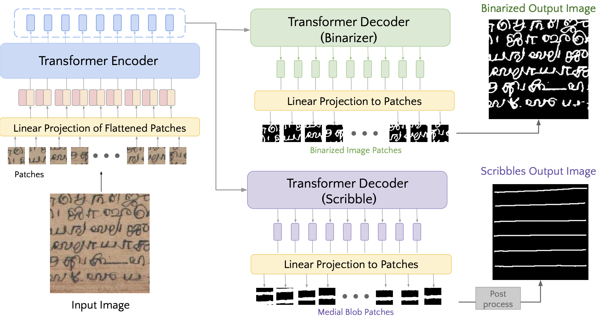
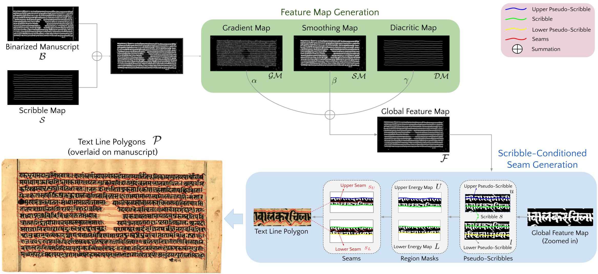

SeamFormer : High Precision Text Line Segmentation for Handwritten Documents
All authors affiliated with the International Institute of Information Technology, Hyderabad
To appear at ICDAR 2023
{kind=link}
SeamFormer Pipeline Stage I: Multi-task ViT for binarisation and scribble map generation, leading to precise scribble creation. Stage II: Leveraging scribbles and binary maps to produce global features, enabling our seam generation algorithm for accurate tight-fit polygons.
Highlights
- Historical South Asian palm leaf manuscripts are challenging to segment text lines from due to dense, unstructured text lines, high aspect ratio, and complex diacritic elements.
- SeamFormer is a novel approach for high precision text line segmentation in handwritten manuscripts. It addresses the challenges of dense unstructured text lines by using a two-stage approach: a multi-task Transformer deep network outputs coarse line identifiers and a scribble-conditioned seam generation procedure generates tight-fitting line segmentation polygons.
- Via experiments and evaluations on new and existing challenging palm leaf manuscript datasets, we show that SeamFormer outperforms competing approaches and generates precise text line segmentations.Complementing the traditional area-centric measures of Intersection-over-Union (IoU) and mean Average Precision (AP), we report the boundary-centric Hausdorff distance and its variants as part of our evaluation approach.
Network Architecture
Stage I : Scribble Generation
A multi-task variant of Vision Transformer (ViT) deep network architecture has been proposed to obtain two outputs: the binarized version of the input manuscript image and the medial blob masks for each text line.
The blob mask outputs are post-processed to extract thin medial axis-like structures (scribbles) which cut across the line. These scribbles provide crucial information regarding local curvature of the text line.
Accurate determination of local curvature plays a key role for the next stage of processing and ultimately, for accurate text line segmentation.



Stage II : Text Line Polygon Generation
In this stage, there are two sub-stages: Feature Map Generation and Scribble-conditioned Seam Generation. The scribbles are superimposed on the binarized input image, producing an image with scribble overlays. These feature maps serve as inputs for a seam generation process, resulting in the accurate and intricate polygons that enclose the text lines.


SeamFormer In Action !
South Asian Manuscripts Dataset

Representative manuscript images from Indiscapes2 Dataset .
- ASR (top left, pink dotted line)
- Penn-in-Hand (bottom left, blue dotted line)
- Bhoomi (top right, green dotted line)
- Jain (bottom right, brown dotted line)

Representative manuscript images from various South Asian Palm Leaf Manuscript collections.
- Sundaneese Manuscript (Extreme Document Degradations , first)
- Khmer Manuscript (Poor Text Contrast - Low Ink , second , third)
- Balineese Manuscript (Poor Document Contrast , fourth )
Materials
 Paper |
Code [PyTorch] |
Qualitative Results
TBD -- Need to add more imgs.
Text Line predictions by SeamFormer on representative test set documents from Indiscapes2 datasets , Balineese , Khmer and Sundaneese datasets.

Citation
@inproceedings{vadlamudiniharikaSF,
title = {SeamFormer: High Precision Text Line Segmentation for Handwritten Documents},
author = {Vadlamudi,Niharika and Rahul,Krishna and Sarvadevabhatla, Ravi Kiran},
booktitle = {International Conference on Document Analysis and Recognition,
{ICDAR} 2023},
year = {2023},
}
Contact
If you have any question, please contact Dr. Ravi Kiran Sarvadevabhatla at ravi.kiran@iiit.ac.in.